|
|
|
Spangled flatworm
Acanthozoon sp.
Family Pseudocerotidae
updated
Feb 2020
Where
seen? Like a glittery black evening gown, this amazingly large flatworm is commonly seen especially
on our Southern shores. On coral rubble, near living reefs. Seasonally,
it can be plentiful, with many worms encountered during a single visit.
Features: 8-12cm long, the worm
can be as large as the palm of our hand! Body black with lots of little black bumps (known as papillae) that are yellow
or orange tipped, some with a white base that gives the appearance of larger white spots. Margin white. Underside pale-whitish with a white outer margin and a black inner margin. It has a pair of small, pointed, ear-like pseudotentacles made up of simple folded
edges of the body.
The flatworm can be quite active, especially at night. Like a stealthy
spotted mat, it is often seen gliding rapidly, hugging the surface
closely, ruffling the body edges as it moves. One was even swimming
from one seagrass blade to another, elegantly ruffling its body edges
to 'fly' through the water. Sometimes, you might come across what
appears to be a very large Spangled flatworm. Look closely and
it will may turn out to be two such flatworms!
Similar animals: Acanthozoon species look very much like Thysanozoon species. They are only
positively identified by microscopic examination: Acanthozoon has only one male pore while Thysanozoon has two. |

Swimming actively from one
seagrass blade to another.
Pulau Semakau, Jan 05 |

Pseduotentacles; body with little bumps with yellow tips, some with a white base. |

Two worms 'penis fencing'.
Beting Bronok, Jun 17
|
*Species are
difficult to positively identify without close examination.
On this website, they are grouped by external features for convenience of
display.
| Spangled flatworms on Singapore shores |
| Other sightings on Singapore shores |
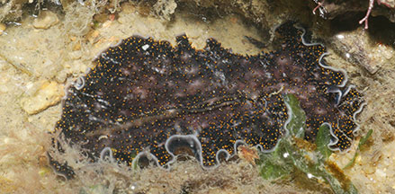
Changi, Dec 19
Photo shared Abel Yeo on facebook. |
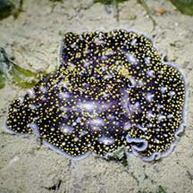
Changi Lost Coast, Jun 22
Photo shared by Vincent Choo on faebook. |
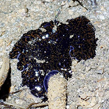
Pulau Ubin, Jul 24
Photo shared by Richard Kuah on facebook. |
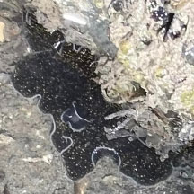
Pulau Ubin, Jul 24
Photo shared by Kelvin Yong on facebook. |
|
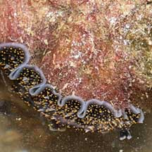
Tanah Merah, Jul 09
Photo shared by James Koh on his
blog. |
. |
|
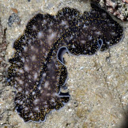
East Coast Park PCN, Aug 22
Photo shared by Loh Kok Sheng on facebook.k. |
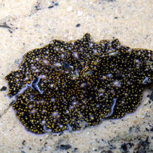
East Coast Park, May 17
Photo shared by Jianlin Liu on facebook |
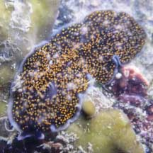
East Coast Park-Marina East, May 22
Photo shared by Richard Kuah on facebook. |
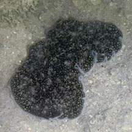
Sentosa Serapong, Jul 25
Photo shared by Kelvin Yong on facebook. |
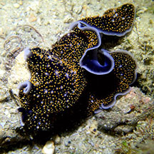
Lazarus Island, Nov 19
Photo shared by Jianlin Liu on facebook. |
|
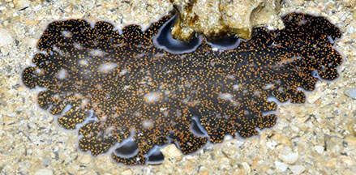
Terumbu Hantu, Jul 18
Photo shared by Loh Kok Sheng on facebook. |
|
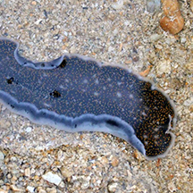
Pulau Jong, Apr 15
Photo shared by Neo Mei Lin on her blog. |
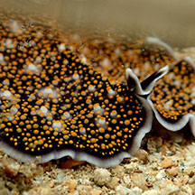
Cyrene Reef, Aug 17
Photo shared by Abel Yeo on facebook. |
|
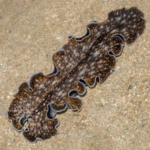
Pulau Semakau East, Feb 26
Photo shared by Marcus Ng on facebook. |
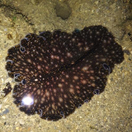
Terumbu Semakau, Jul 14
Photo shared by Jurian Toramae on facebook. |
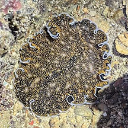
Terumbu Raya, Jul 25
Photo shared by Lon Voon Ong on facebook. |
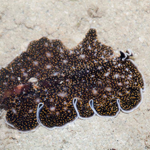
Terumbu Semakau, Dec 15
Photo shared by Marcus Ng on facebook. |
|
|
 'Penis fencing'
'Penis fencing'
Terumbu Bemban,
Jun 10
Photo shared by Loh Kok Sheng on his
blog. |
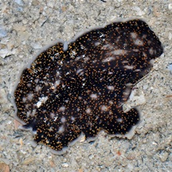
Terumbu Bemban,
Apr 11
Photo shared by Toh Chay Hoon on her
blog. |
|
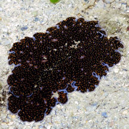
Terumbu Pempang Laut, Dec 18
Photo shared by Jianlin Liu on facebook. |
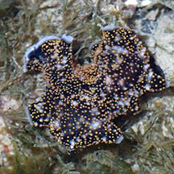
Terumbu Pempang Laut, May 15
Photo shared by Heng Pei Yan on facebook. |
|
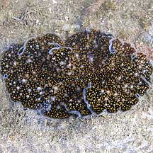
Terumbu Pempang
Darat, Jun 10
Photo shared by James Koh on his
blog. |
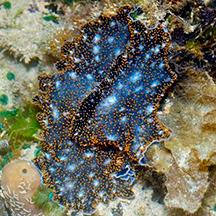
Terumbu Pempang
Tengah, Sep 14
Photo shared by Loh Kok Sheng on his
blog. |
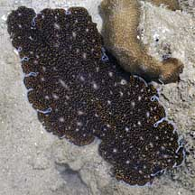
Pulau Pawai, Dec 09 |
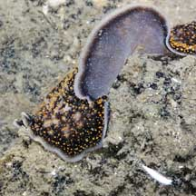
Pulau Sudong, Dec 09
Photo shared by James Koh on his
flick. |
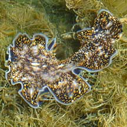
Terumbu Salu, Jan 10
Photo shared by Loh Kok Sheng on his
flick. |

'Penis fencing'
Terumbu Berkas, Jan 10
Photo shared by Loh Kok Sheng on his
flickr. |
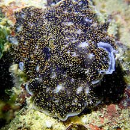
Pulau Salu, Apr 21
Photo shared by Jianlin LIu on facebook. |
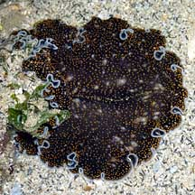
Pulau Senang, Jun 10
Photo shared by James Koh on his
flick. |
|

Pulau Berkas, May 10 |
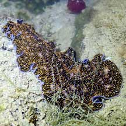
Pulau Berkas, Feb 22
Photo shared by Jianlin Liu on facebook. |
|
Acknowledgement
Grateful thanks to Rene Ong for sharing details and identifying the flatworms on this page.
References
- Rene S.L. Ong and Samantha J.W. Tong. 29 October 2018. A preliminary checklist and photographic catalogue of polyclad flatworms recorded from Singapore. Nature in Singapore 2018 11: 77–125.
- Newman, Leslie
and Lester Cannon. 2003. Marine
Flatworms: The World of Polyclads.
CSIRO Publishing. 97pp.
- Humann, Paul
and Ned Deloach. 2010. Reef
Creature Identification: Tropical Pacific New World Publications.
497pp.
- Kuiter, Rudie
H and Helmut Debelius. 2009. World
Atlas of Marine Fauna. IKAN-Unterwasserachiv. 723pp.
|
|
|